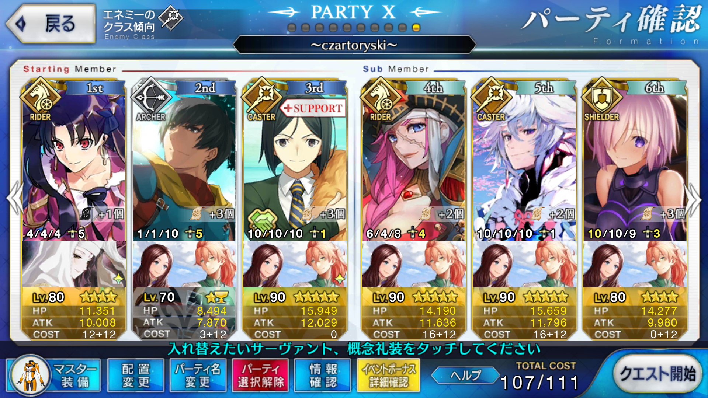
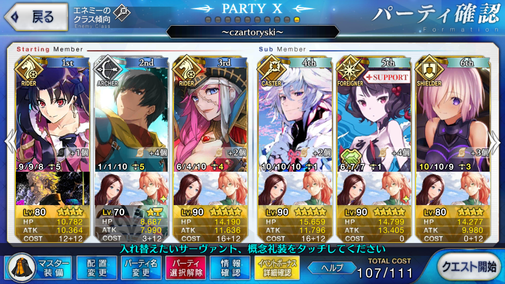

【FGO】復刻：ダ・ヴィンチと七人の贋作英霊 ライト版 チャルトリスキ 周回メモ
この記事ではFGOイベントの周回を扱います。
3T周回には拘らず、筆者の手持ちでできるだけドロップ追加礼装を積んで走る方針で組んでいます。
編成画像にて最終再臨絵のネタバレがあるのでご注意を
基本方針
- 3T周回には拘らない
- 可能な限りドロップ追加礼装（カルデアの顕学）を搭載する
- 1w素殴りでNPを溜め、2wと3wを宝具で片付ける
- オーダーチェンジ禁止
- マーリン/孔明禁止
ドロップアイテム
- 蛮神の心臓
- 禁断の頁
エネミー構成
- スペルブック
- デーモンx2
- 諸葛孔明 or フィン・マックール
2wのデーモンx2（HP:48,639）及び最後のボス（HP:20万程度）と取り巻きのスペルブック（HP:46,028）を宝具で吹き飛ばす
天地人相性
相性有利の場合、与ダメージ+10％
相性不利の場合、与ダメージ-10％
| 敵 | 天地人 |
|---|---|
| デーモン | 天 |
| 諸葛孔明 | 人 |
| フィン・マックール | 天 |
以上から、チャルトリスキ周回3wでは人属性だと総合してダメージを出しやすく、天属性ではダメージを出しにくい
星、獣属性は相性に左右されずに戦えるため安定しやすい
2wはデーモンが天属性のため、地属性の全体宝具持ちはやや不利
周回用キャラ選別
2w
人属性かつ全体宝具持ちのライダーはティーチ、アレキサンダー、マルタ、サンタオルタ、イスカンダル、レジスタンスのライダー
筆者のカルデアにおいて育っているのはマルタのみだが、Lv.80 宝具5でもバフなしでは2wを一撃で片付けられない
そこで2wを片付けられないかどうか、何人かライダーやアルターエゴで試してみた
なお、バーサーカーは1wで事故を起こして倒れる可能性を考慮してここでは採用していない
| キャラ | Lv | 天地人 | 宝具Lv | バフ/デバフ | ダメージ |
|---|---|---|---|---|---|
| キアラ | 90 | 獣 | 1 | 五停心観 Lv.8 | 35,000 |
| ドレイク | 90 | 星 | 4 | 嵐の航海者 Lv.6 | 60,000 |
| マルタ | 80 | 人 | 5 | なし | 35,000 |
| イシュタル | 80 | 天 | 5 | OC1 | 60,000 |
| 輝ける水の衣 Lv.4 | |||||
| アストルフォ | 70 | 地 | 3 | 怪力 Lv.4 | 30,000 |
| メドゥーサ | 70 | 地 | 5 | 怪力 Lv.4 | 30,000 |
最もダメージの出るかつNPチャージ持ちのドレイクを3wに使用するとして、それ以外では自己バフでデーモンを削りきれるのはイシュタルのみだった
アストルフォはレベルが上がりきっておらず（羽根が足りない！）、メドゥーサ共々 天地人不利とは言え、聖杯やバフの盛り方を変えればもっと伸びるかもしれない
この二人はNP獲得スキルがあるため、十分に火力が伸ばせるのであれば他より安定する候補になり得る
キアラは宝具レベル1ではダメージが伸びず、他のキャラからのバフが必須となる
マルタはバスター宝具かつAカード3枚構成でNPもタメやすいが、やはり自己バフがなく防御デバフスキルも単体
2wは自己バフが非常に優秀な水着イシュタルを採用する
2017年夏のイベントでの配布キャラであり、しっかり走りきっているプレイヤーであれば宝具レベル5になっているのも嬉しい
輝ける水の衣が3T持続するため、ドレイクの宝具威力もアップする（だいたい全体に70,000程度通る）
3w
ドレイクの全体宝具だけでは取り巻きを潰すのが精一杯なので、もうひとり単体宝具の火力担当を用意したい
ドレイクで70,000程度削れるため、残り130,000を削りきる火力が必要になる
| キャラ | Lv | 天地人 | 宝具Lv | バフ/デバフ | ダメージ |
|---|---|---|---|---|---|
| ケツァル・コアトル | 90 | 天 | 2 | カリスマ Lv.8 | 140,000 |
| 善神の智慧 Lv.2 | |||||
| 嵐の航海者 Lv.6 | |||||
| 輝ける水の衣 Lv.4 | |||||
| オジマンディアス | 90 | 天 | 3 | カリスマ Lv.6 | 128,000～150,000 |
| 皇帝特権 Lv.6 | |||||
| 嵐の航海者 Lv.6 | |||||
| 輝ける水の衣 Lv.4 | |||||
| 坂田金時 | 80 | 地 | 5 | OC1 | 123,000 |
| 千里疾走 Lv.4 | |||||
| 嵐の航海者 Lv.6 | |||||
| 輝ける水の衣 Lv.4 | |||||
| メカエリチャン | 80 | 人 | 5 | ファイナルエリチャン Lv.9 | 127,000 |
| 嵐の航海者 Lv.6 | |||||
| 輝ける水の衣 Lv.4 | |||||
| 牛若丸 | 75 | 人 | 5 | カリスマ Lv.7 | 115,000～148,000 |
| 嵐の航海者 Lv.6 | |||||
| 輝ける水の衣 Lv.4 | |||||
計測回数１桁なのでダメージは目安程度に思ってほしい
どれも追撃でクリティカルを狙えれば十分に1ターンで3wを終えることができる
2wをイシュタルのQ宝具でふっとばすため、星は十分に出ているはずだ
ケツァル・コアトルとオジマンディアスは貫禄の星5といったところ
自己NPチャージと全体/単体火力強化を持つコアトルか、全体にNPを配った上で火力強化もできるオジマンディアスかは好み次第
全体にNPが配れるため、安定性はオジマンディアスのほうがやや上だろうか
星4火力お化けの金時やバフの性能と天地人属性で有利なメカエリがそれに続く
この両者はイベント配布サーヴァントであり、自己NPチャージも持っている
強いて言えばメカエリはB3枚構成なので1wでNPが溜めにくく、スキルによるNPチャージ量も多い金時のほうが安定する
しっかりオーバーチャージして宝具威力を上げればダメージも満足いくレベルになるだろう
星3の牛若丸は聖杯が一つ入っているとは言え、かなり火力が伸びる
天地人属性の有利ややや低めのランクとは言えカリスマを持っているのが大きいか
味方全体のNP獲得量を上げるスキルも持っているので、コスト調整したい場合や星4配布サーヴァントを持っていない場合は十分に採用圏内
どの構成にも言えることだが、1wでのNPチャージが間に合わずに2wに突入してしまうことがある
マスター礼装を火力を伸ばすためでなく、魔術礼装でNP補助に使えるようにしているのはそのため
コマンドシャッフルでAチェインやブレイブチェインを狙いやすくすることもできる
3T周回する
- 孔明/マーリン/オーダーチェンジを用いたNP補助で3T周回する場合の構成

イシュタルのみ凸魔性菩薩（初期NP60以上ならなんでも）
それ以外は未凸ケンガク（初期NP30）
アーラシュの弓矢作成はLv.10
ドレイクの星の開拓者はLv.6以上
1w
- アーラシュで弓矢作成（NP30→60）
- 孔明で鑑識眼をアーラシュに（NP60→90）
- 孔明で防御バフ（アーラシュNP90→100 イシュタルNP60→70）
- ステラ
2w
- 孔明で攻撃バフ（イシュタルNP70→80 ドレイクNP30→40）
- オーダーチェンジ孔明→マーリン
- 夢幻のカリスマ（イシュタルNP80→100 ドレイクNP40→60）
- 幻術（スター発生UP）
- 輝ける水の衣
- イシュタル宝具
3w
- 星の開拓者（ドレイクNP60→100）
- 英雄作成
- ゴールデンワイルドハント
改良

アーラシュが凸ケンガク装備かつドレイクの星の開拓者がLv10、イシュタルが未凸カレスコ装備なら孔明、オーダーチェンジ不要
- アーラシュ、イシュタル、マーリンの構成からスタート
- 霊子譲渡＋弓矢作成でNP100ステラ
- 夢幻のカリスマ＋幻術＋輝ける水の衣＋アンガルタセブンカラーズ
- 星の開拓者すればNP100
イシュタルで宝具を撃つ際にQチェインしておくと安定度が増す
フレンドは自由なので、EX+凸ケンガクがベスト
3wはクリティカル必須だが、ドレイクとイシュタルどちらでもかまわない
- イシュタルでクリティカルする場合はスキル2,3を撃っておく
- 当然、クリティカルを出すほうに英雄作成するのも忘れずに
- バスターがないと撃ち漏らすことがあるのでコマンドシャッフルを
- バスタークリティカルなら1回でも良い
最適解はアーラシュ（凸ケンガク）、アストルフォ（凸ケンガク）、マーリン、ドレイク（凸ケンガク）か？
- アストルフォの火力がわからないため机上論
- 凸ケンガクx3は現実的でないが、適宜NP50％礼装に置き換えても良い